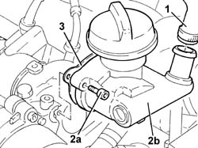

1084A22 Engine oil FILLER - R.R.
- Path
- Procedures > 10 ENGINE > 1084 ENGINE LUBRICATION > 1084A INDICATORS/CHECK DEVICES > 1084A22 Engine oil FILLER - R.R.
- Kind
- repair procedure (removal / refitting; the operation number is the code)
- Applies to
- engines: 2.4 JTD 20V; all production periods
- Interactive page
- https://sloeber94.github.io/elrnDB-lThss/en/#/850870
Applies to: engines: 2.4 JTD 20V; all production periods
 Removing
Removing
 Refitting
Refitting- Disconnect the negative battery terminal.
See in Op. 1016A10 SOUND-PROOFING COVER - R.R.
See in Op. 7040D50 ENGINE COMPARTMENT UPPER SOUND INSULATION SHIELD - R.R.
See in Op. 1048B44 RIGID air supply PIPE from heat exchanger to intake manifold - R.R.
- Disconnect the electrical connection from the engine coolant temperature sensor.
 | Description | Connector |
|---|---|---|
. | Engine coolant temperature sensor/sender unit | K036 |
1. Loosen the band and disconnect the engine oil vapour recovery pipe from the engine oil filler.
2. Undo the bolts (2a) and remove the engine oil filler (2b).
3. Remove the gasket.

Applies to: engines: 2.4 JTD 20V; all production periods
Refitting
Removing- Fit the engine oil filler complete with gasket and fasten it tightening the fixing bolts to the recommended torque.
- Connect the engine oil vapour recovery pipe to the engine oil filler and tighten the band.
- Connect the electrical connection to the engine coolant temperature sensor.
| Description | Connector |
|---|---|---|
. | Engine coolant temperature sensor/sender unit | K036 |
See in Op. 1048B44 RIGID air supply PIPE from heat exchanger to intake manifold - R.R.
See in Op. 7040D50 ENGINE COMPARTMENT UPPER SOUND INSULATION SHIELD - R.R.
See in Op. 1016A10 SOUND-PROOFING COVER - R.R.
- Connect the negative battery terminal.